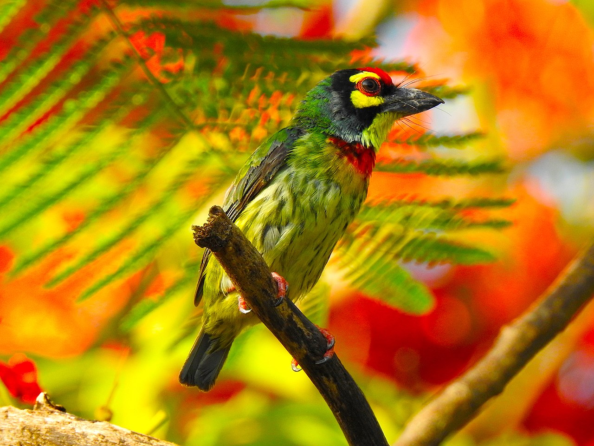
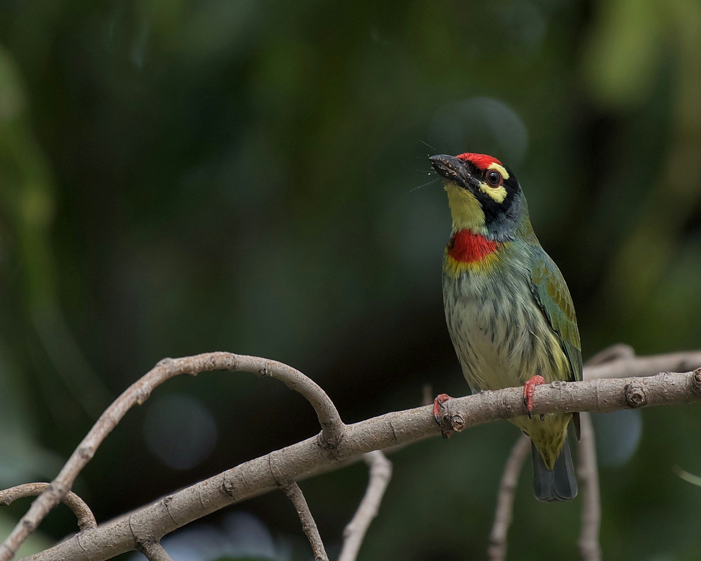

The Coppersmith Barbet is a small, colorful bird known for its repetitive, metallic call. Found across India, it adds vibrant charm to urban parks, gardens, and wooded areas.

Coppersmith Barbets prefer fig trees, groves, and city gardens. They feed on fruits and berries, nest in tree cavities, and sing persistently during the breeding season, often from exposed perches.
Read more about this bird and its wonderous characteristics on portals like E-Bird.